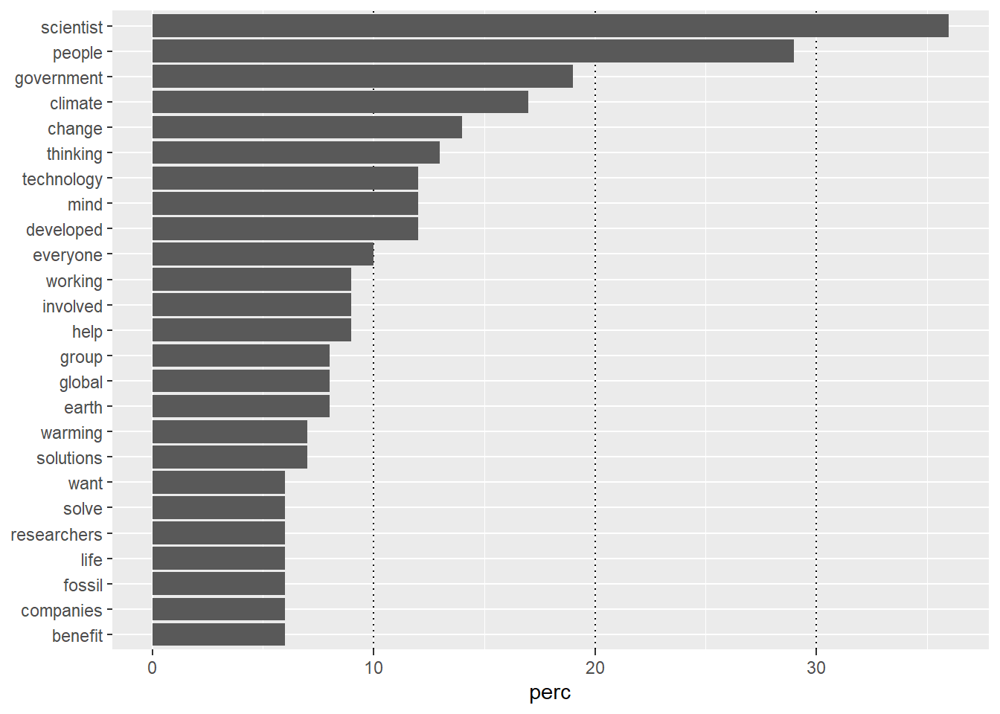
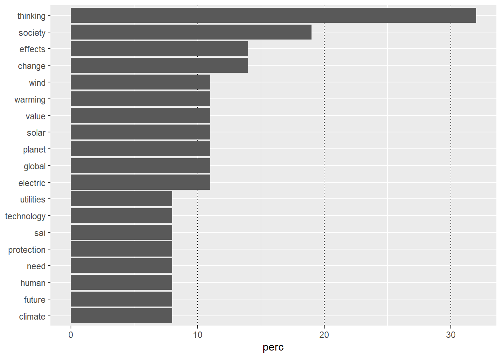

## global variablesClean and prepare data
Background Information
This is an R Markdown document. Instructions for writing these documents and background information can be found in the book written by Xie, Allaire, and Grolemund (2018) When you execute code within the document, the results appear beneath the code. This is an R Markdown document. Instructions for writing these documents and background information can be found in the book written by Xie, Allaire, and Grolemund (2018) When you execute code within the document, the results appear beneath the code. This file contains the analysis step (confirmatory and exploratory analyses). File are split into multiple subfiles like data processing and data analyses steps, which follows the classical data-analysis pipeline (see Peng and Matsui 2016; Wickham and Grolemund 2017).
Notes
Global variables to control output:
get packages, raw data, functions
### install and load packages
# if packages are not already installed, the function will install and activate them
usePackage <- function(p) {
if (!is.element(p, installed.packages()[,1]))
install.packages(p, dep = TRUE, repos = "http://cran.us.r-project.org")
require(p, character.only = TRUE)
}
usePackage("readxl") # read .xlsx files
usePackage("writexl") # write .xlsx files
usePackage("tidyverse") # data cleaning and summarizing
usePackage("jsonlite") # json files
## process texts
# usePackage("tidytext")
usePackage("stopwords")
## outputs
usePackage("stargazer") # create tables
usePackage("DT") # create dynmaic tables
usePackage("report") # get reports of statistical tests in APA7
rm(usePackage)
### load data files
## change working directory
setwd("output")
## load data
dat_ques <- read_rds(file = "questionnaire.rds")
dat <- read_rds(file = "loop.rds")
### load functions
# print(getwd())
setwd("../functions")
for(i in 1:length(dir())){
# print(dir()[i])
source(dir()[i], encoding = "utf-8")
}
rm(i)data analysis descriptive
table(dat_ques$socio_sex) / nrow(dat_ques)
DATA_EXPIRED Female Male Prefer not to say
0.01086957 0.45652174 0.52173913 0.01086957 dat_ques$socio_timeTaken <- dat_ques$socio_timeTaken / 60
dat_ques$socio_timeTaken[dat_ques$socio_timeTaken > 60] <- NA
dat_ques$socio_age <- as.numeric(dat_ques$socio_age)Warning: NAs durch Umwandlung erzeugtpsych::describe(x = dat_ques[, c("socio_age", "socio_timeTaken")]) vars n mean sd median trimmed mad min max range skew
socio_age 1 90 41.10 13.09 37.00 40.25 8.90 20.00 76.00 56.0 0.65
socio_timeTaken 2 89 26.56 10.96 24.13 25.49 9.96 9.73 57.63 47.9 0.96
kurtosis se
socio_age -0.61 1.38
socio_timeTaken 0.44 1.16table(dat_ques$knowSRM) / nrow(dat_ques)
knowSRMlittle knowSRMlot knowSRMno
0.14130435 0.02173913 0.83695652 summary(nchar(dat$category_probe)) Min. 1st Qu. Median Mean 3rd Qu. Max.
8.0 67.0 107.5 138.7 180.0 1060.0 dat$category_probe[!is.na(dat$category_probe_again)] <- dat$category_probe_again[!is.na(dat$category_probe_again)]
summary(nchar(dat$category_probe)) Min. 1st Qu. Median Mean 3rd Qu. Max.
8.00 70.75 110.00 140.67 180.25 1060.00 summary(nchar(dat$comp_probe)) Min. 1st Qu. Median Mean 3rd Qu. Max.
5.0 48.0 81.0 108.1 131.2 1136.0 dat$comp_probe[!is.na(dat$comp_probe_again)] <- dat$comp_probe_again[!is.na(dat$comp_probe_again)]
summary(nchar(dat$comp_probe)) Min. 1st Qu. Median Mean 3rd Qu. Max.
3.0 62.0 87.0 116.3 137.2 1136.0 # "\\S+" matches non-whitespace characters (words)
dat$wordCount_category_probe <- str_count(dat$category_probe, "\\S+")
dat$wordCount_comp_probe <- str_count(dat$comp_probe, "\\S+")
psych::describe(x = dat[, c("wordCount_category_probe", "wordCount_comp_probe")]) vars n mean sd median trimmed mad min max
wordCount_category_probe 1 644 25.37 19.62 20 22.40 11.86 1 192
wordCount_comp_probe 2 644 20.65 18.58 16 17.47 8.90 1 201
range skew kurtosis se
wordCount_category_probe 191 2.83 13.95 0.77
wordCount_comp_probe 200 3.89 24.31 0.73data analysis exploratory
for virtue ethics
table(str_subset(string = dat$item, pattern = "virtue"))
virtue01 virtue09
25 35 tmp_first <- dat$comp_probe[str_detect(string = dat$item, pattern = "virtue")]
tmp_second <- dat$comp_probe_again[str_detect(string = dat$item, pattern = "virtue")]
tmp_second <- tmp_second[!is.na(tmp_second)]
whoResponsible <- c(tmp_first, tmp_second)
whoResponsible_clean <- cleanUp(charvec = whoResponsible)
head(whoResponsible_clean)[1] "scientists engineers educated climate change know best solve"
[2] "scientists engineers creating utilitys tools help climate change"
[3] "ngo"
[4] "government"
[5] "support helpful us"
[6] "jack niles marty cooper" # --- Similarity-based normalization ---
threshold <- 0.95
min_num_chars <- 8
unique_words <- unique(unlist(str_split(whoResponsible_clean, " ")))
for (i in seq_along(unique_words)) {
current_word <- unique_words[i]
if (is.na(current_word)) next
if(nchar(current_word) >= min_num_chars){
others <- unique_words[-i]
similarities <- sapply(others, function(w) jaccard_sim(current_word, w))
if (any(similarities > threshold)) {
matched <- others[similarities > threshold]
cat("Replacing:", paste(matched, collapse = ", "), "→", current_word, "(round", i, ")\n")
whoResponsible_clean <- str_replace_all(
whoResponsible_clean,
pattern = paste0("\\b(", paste(matched, collapse = "|"), ")\\b"),
replacement = current_word
)
}
}
}Replacing: scientist → scientists (round 1 )
Replacing: environment → enviornment (round 29 )
Replacing: develop → developed (round 40 )
Replacing: researcher, researchers → research (round 59 )
Replacing: enviornment → environment (round 63 )
Replacing: scientists → scientist (round 64 )
Replacing: research, researchers → researcher (round 86 )
Replacing: solutions → solution (round 121 )
Replacing: research, researcher → researchers (round 128 )
Replacing: measure → measures (round 182 )
Replacing: solution → solutions (round 227 )
Replacing: course, sources → resources (round 238 )
Replacing: latino → national (round 254 )
Replacing: person → response (round 268 )
Replacing: address → addressed (round 283 )# Tokenize
tokenized_df <- tibble(
person = seq_along(whoResponsible_clean),
text = whoResponsible_clean
) %>%
rowwise() %>%
mutate(word = list(unlist(str_split(text, " ")))) %>%
unnest(word)
tokenized_df_count <- tokenized_df %>%
count(word, sort = TRUE)
print(tokenized_df)# A tibble: 717 × 3
person text word
<int> <chr> <chr>
1 1 scientist engineers educated climate change know best solve scien…
2 1 scientist engineers educated climate change know best solve engin…
3 1 scientist engineers educated climate change know best solve educa…
4 1 scientist engineers educated climate change know best solve clima…
5 1 scientist engineers educated climate change know best solve change
6 1 scientist engineers educated climate change know best solve know
7 1 scientist engineers educated climate change know best solve best
8 1 scientist engineers educated climate change know best solve solve
9 2 scientist engineers creating utilitys tools help climate change scien…
10 2 scientist engineers creating utilitys tools help climate change engin…
# ℹ 707 more rowsprint(tokenized_df_count)# A tibble: 286 × 2
word n
<chr> <int>
1 scientist 34
2 people 28
3 government 17
4 climate 15
5 thinking 14
6 change 13
7 developed 11
8 mind 11
9 technology 11
10 involved 10
# ℹ 276 more rowstokenized_df_count$perc <- NA
for(v in tokenized_df_count$word){
tokenized_df_count$perc [tokenized_df_count$word == v] <- round(x = length(unique(tokenized_df$person[tokenized_df$word == v])) / length(unique(tokenized_df$person)), digits = 2)*100
}p <- tokenized_df_count %>%
filter(perc > 5) %>%
mutate(word = reorder(word, perc)) %>%
ggplot(aes(x = perc, y = word)) +
geom_vline(xintercept = c(10, 20, 30), linetype = "dotted") +
geom_col() +
labs(y = NULL)
print(p)
setwd("output")
ggsave(filename = "virtue_word_frequency_plot.png", plot = p, width = 8, height = 6, dpi = 300)for utilitarian ethics
table(str_subset(string = dat$item, pattern = "utilitarian"))
utilitarian01
28 tmp_first <- dat$comp_probe[str_detect(string = dat$item, pattern = "utilitarian")]
tmp_second <- dat$comp_probe_again[str_detect(string = dat$item, pattern = "utilitarian")]
tmp_second <- tmp_second[!is.na(tmp_second)]
whichUtilities <- c(tmp_first, tmp_second)
whichUtilities_clean <- cleanUp(charvec = whichUtilities)
head(whichUtilities_clean)[1] "thinking utilities mitigate effects heating planet described text"
[2] "thinking stratopsheric aerosol injection"
[3] "aid prevention global warming participate protection human race"
[4] "value human beings"
[5] "thinking utilities like electric solar wind power mostly"
[6] "thinking change value society" # --- Similarity-based normalization ---
threshold <- 0.95
min_num_chars <- 8
unique_words <- unique(unlist(str_split(whichUtilities_clean, " ")))
for (i in seq_along(unique_words)) {
current_word <- unique_words[i]
if (is.na(current_word)) next
if(nchar(current_word) >= min_num_chars){
others <- unique_words[-i]
similarities <- sapply(others, function(w) jaccard_sim(current_word, w))
if (any(similarities > threshold)) {
matched <- others[similarities > threshold]
cat("Replacing:", paste(matched, collapse = ", "), "→", current_word, "(round", i, ")\n")
whichUtilities_clean <- str_replace_all(
whichUtilities_clean,
pattern = paste0("\\b(", paste(matched, collapse = "|"), ")\\b"),
replacement = current_word
)
}
}
}# Tokenize
tokenized_df <- tibble(
person = seq_along(whichUtilities_clean),
text = whichUtilities_clean
) %>%
rowwise() %>%
mutate(word = list(unlist(str_split(text, " ")))) %>%
unnest(word)
tokenized_df_count <- tokenized_df %>%
count(word, sort = TRUE)
print(tokenized_df)# A tibble: 230 × 3
person text word
<int> <chr> <chr>
1 1 thinking utilities mitigate effects heating planet described te… thin…
2 1 thinking utilities mitigate effects heating planet described te… util…
3 1 thinking utilities mitigate effects heating planet described te… miti…
4 1 thinking utilities mitigate effects heating planet described te… effe…
5 1 thinking utilities mitigate effects heating planet described te… heat…
6 1 thinking utilities mitigate effects heating planet described te… plan…
7 1 thinking utilities mitigate effects heating planet described te… desc…
8 1 thinking utilities mitigate effects heating planet described te… text
9 2 thinking stratopsheric aerosol injection thin…
10 2 thinking stratopsheric aerosol injection stra…
# ℹ 220 more rowsprint(tokenized_df_count)# A tibble: 130 × 2
word n
<chr> <int>
1 thinking 12
2 change 8
3 society 7
4 climate 6
5 effects 5
6 electric 4
7 global 4
8 planet 4
9 solar 4
10 value 4
# ℹ 120 more rowstokenized_df_count$perc <- NA
for(v in tokenized_df_count$word){
tokenized_df_count$perc [tokenized_df_count$word == v] <- round(x = length(unique(tokenized_df$person[tokenized_df$word == v])) / length(unique(tokenized_df$person)), digits = 2)*100
}p <- tokenized_df_count %>%
filter(perc > 5) %>%
mutate(word = reorder(word, perc)) %>%
ggplot(aes(x = perc, y = word)) +
geom_vline(xintercept = c(10, 20, 30), linetype = "dotted") +
geom_col() +
labs(y = NULL)
print(p)
setwd("output")
ggsave(filename = "utilitarian_word_frequency_plot.png", plot = p, width = 8, height = 6, dpi = 300)References
Peng, Roger D., and Elizabeth Matsui. 2016. The Art of Data Science: A Guide for Anyone Who Works with Data. Lulu.com. https://bookdown.org/rdpeng/artofdatascience/.
Wickham, Hadley, and Garrett Grolemund. 2017. R for Data Science: Import, Tidy, Transform, Visualize, and Model Data. "O’Reilly Media, Inc.". https://r4ds.had.co.nz/.
Xie, Yihui, J. J. Allaire, and Garrett Grolemund. 2018. R Markdown: The Definitive Guide. New York: Chapman; Hall/CRC. https://doi.org/10.1201/9781138359444.